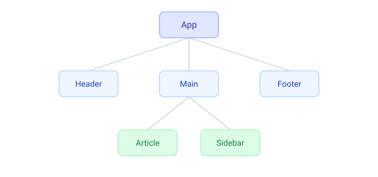

1. Компоненти як будівельні блоки
Інтерфейс у React складається з компонентів — функцій, що повертають JSX. Компоненти можна вкладати один в одного, будуючи дерево UI.

function Header() {
return <header>Мій сайт</header>;
}
function Footer() {
return <footer>© 2026</footer>;
}
function Page() {
return (
<div>
<Header />
<main>Основний вміст</main>
<Footer />
</div>
);
}Назва компонента обовʼязково починається з великої літери. З малої
React вважатиме тег звичайним HTML-елементом (<header>, а не ваш <Header>).
2. Композиція та children
Компонент-обгортка отримує вкладений вміст через спеціальний проп children.
function Card({ children }) {
return <div className="card">{children}</div>;
}
function App() {
return (
<Card>
<h2>Заголовок</h2>
<p>Цей вміст потрапить у children</p>
</Card>
);
}3. Компоненти мають бути чистими
Під час рендеру компонент має лише обчислювати JSX зі своїх вхідних даних і не змінювати зовнішні змінні. Однакові вхідні дані → однаковий результат.
// ❌ Погано: мутуємо зовнішню змінну під час рендеру
let count = 0;
function Bad() {
count += 1; // побічний ефект під час рендеру
return <p>{count}</p>;
}
// ✅ Добре: результат залежить лише від пропсів
function Good({ value }) {
return <p>{value}</p>;
}4. Організація файлів
Зазвичай кожен компонент — окремий файл, який експортує функцію і імпортується там, де потрібен.
// Button.jsx
export default function Button({ label }) {
return <button>{label}</button>;
}
// App.jsx
import Button from './Button';
function App() {
return <Button label="Надіслати" />;
}